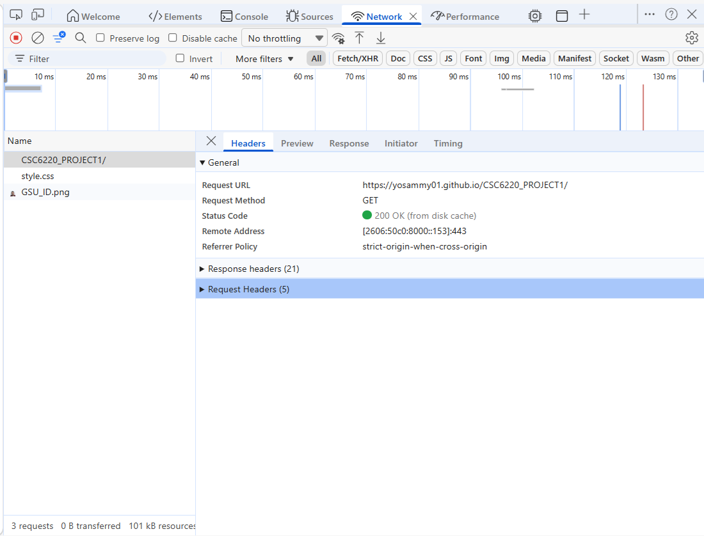
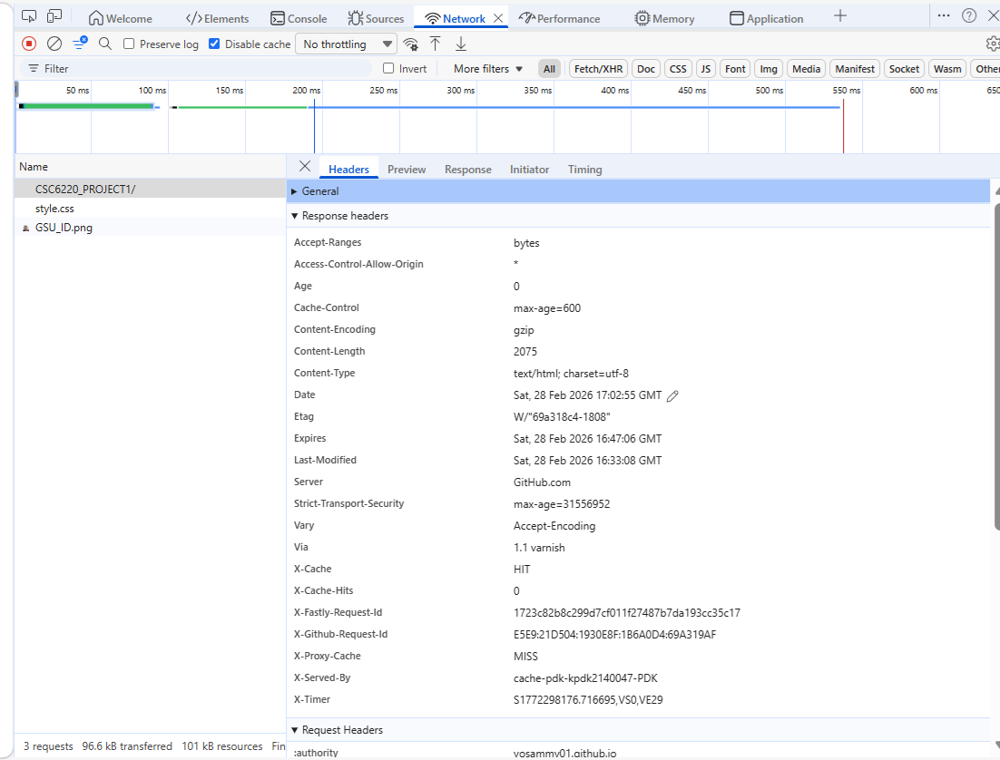

CSC6220 Computer Networking: Project 1
Team (Graduate Student): Samuel Robles
About/Contact
Education
B.S. Electrical Engineering and Computer Science, May 2007
University of California – Berkeley, CA.
M.S. Computer Science, In Progress
Georgia State University – Atlanta, GA
Expected Graduation: June 2027
Experience
NCR Voyix (2017–2024)
Software Engineer II
Omnico Group (2015– 2016)
Software Engineer
NCR Corporation (2007–2014)
Software Engineer II
Contact
E-Mail: srobles5@student.gsu.edu
Phone: 770-765-0413
LinkedIn: https://www.linkedin.com/in/samuel-robles-195b219b/
GitHub: https://github.com/yosammy01
Networking Concepts
• DNS (Domain Name System) Resolution - How does Domain resolve to IP Address?
1. This web site is hosted on GitHub Pages with domain name "yosammy01.github.io"
2. The browser first checks its own local memory for the GitHub Pages domain.
3. If still needed, the computer asks the Internet Service Provider's DNS server.
4. If still needed, the ISP asks a global Root Server.
5. The Root Server uses the very end of the domain (.io) and directs the ISP to the .io Top-Level Domain (TLD) server.
6. The TLD server uses the next part of your domain (github) and directs the ISP to the Authoritative Name Server (ANS) for GitHub Pages.
7. The ANS uses the full domain name (yosammy01.github.io) and returns the IP address for that domain to the ISP.
8. The ISP returns the IP address to the browser and it can now connect to the domain (yosammy01.github.io) using that IP address.
---------------------------------------------
C:\Users\samue>nslookup yosammy01.github.io
Server: UnKnown
Address: 2600:1702:8755:4e10::1
Non-authoritative answer:
Name: yosammy01.github.io
Addresses: 2606:50c0:8000::153
2606:50c0:8003::153
2606:50c0:8002::153
2606:50c0:8001::153
185.199.111.153
185.199.110.153
185.199.109.153
185.199.108.153
---------------------------------------------
• IP Addressing (IPv4 / IPv6) Resolution
1. Using the ping command, we can see that the domain "yosammy01.github.io" resolves to the IPv6 address "2606:50c0:8003::153".
--------------------------------------------------------------------------
C:\Users\samue>ping yosammy01.github.io
Pinging yosammy01.github.io [2606:50c0:8003::153] with 32 bytes of data:
Reply from 2606:50c0:8003::153: time=12ms
Reply from 2606:50c0:8003::153: time=10ms
Reply from 2606:50c0:8003::153: time=11ms
Reply from 2606:50c0:8003::153: time=9ms
--------------------------------------------------------------------------
• Protocols (HTTP vs HTTPS, headers, status codes)
1. This web site requires HTTPS protocol to be hosted on GitHub Pages, which means that the communication between the browser and the server
is encrypted using SSL/TLS. This can be verified by the "https://" prefix in the Request URL.
2. When navigating to the site, the server returns a 200 OK status code. This indicates that the client's request was successfully received,
understood, and processed, and that the server has successfully delivered the requested index.html file. When refreshing the site, the server
returns a 304 Not Modified status code. This indicates that the client's cached version of the index.html file is still valid and has not been
modified since the last request, so the server does not need to resend the file.
3. The HTTP headers for the request and response can be viewed in the browser's developer tools. The request headers include information such
as the User-Agent (which identifies the browser), Accept (which specifies the types of content the client can process), and Host (which specifies
the domain being requested). The response headers include information such as Content-Type (which indicates the type of content being returned),
Content-Length (which indicates the size of the response body), and Server (which identifies the server software).


